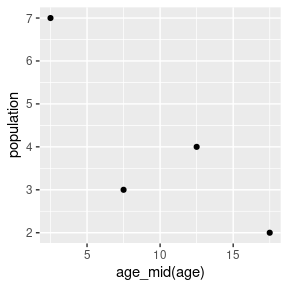

poputils
poputils.Rmd1 Aims
poputils contains tools for carrying out common tasks when working with demographic data. Some distinctive features:
- poputils tries to into tidyverse workflows. For instance, poputils functions use data frames for inputs and outputs, use tidyselect methods to specify variables, and follow tidyverse conventions for variable names.
- poputils allows for uncertainty through the use of rvecs. An rvec is an object holding multiple draws from a distribution that behaves similarly to an ordinary R vector.
- Allow users to work directly with age and time labels, based on common set of methods.
Some functions in poputils are designed for data analysts working on demographic datasets. Others are designed for programmers creating functions to be used at data analysts.
2 Tools for data analysts
2.1 Labels
2.1.1 Age
Producers of demographic data follow a wide variety of styles for labeling age groups. poputils contains tools for parsing and manipulating age group labels.
Age label functions in poputils require that age labels belong to one of three types:
-
"single". Single years of age, possibly including an open age group, eg"0",“81”,“17”,“100+”`. -
"five". Five-year age groups, possibly including an open age group, eg"0-4","80-84","15-19","100+". -
"lt". Life table age groups. Like"five", but with the"0-4"age group split into"0"and"1-4".
Age labels created by poputils functions such as age_labels() follow a standard set of rules. Many age labels created using other rules can, however, be parsed by poputils functions,
library(poputils)
library(dplyr, warn.conflicts = FALSE)
tibble(original = c("5 to 9", "5_9", "05-09"),
reformated = reformat_age(original))
#> # A tibble: 3 × 2
#> original reformated
#> <chr> <fct>
#> 1 5 to 9 5-9
#> 2 5_9 5-9
#> 3 05-09 5-9Functions age_lower(), age_upper(), and age_mid() extract information about lower limits, upper limits, and centers of age groups. This can be useful for ordering data
df <- data.frame(age = c("5-9", "0-4", "15-19", "10-14"),
population = c(3, 7, 2, 4))
df
#> age population
#> 1 5-9 3
#> 2 0-4 7
#> 3 15-19 2
#> 4 10-14 4
df |>
arrange(age_lower(age))
#> age population
#> 1 0-4 7
#> 2 5-9 3
#> 3 10-14 4
#> 4 15-19 2and plotting

among other things.
Functions combine_age() and set_age_open() can be used to collapse age groups,
tibble(age = age_labels("lt", max = 30),
age_5 = combine_age(age, to = "five"),
age_25plus = set_age_open(age, lower = 20))
#> # A tibble: 8 × 3
#> age age_5 age_25plus
#> <chr> <chr> <chr>
#> 1 0 0-4 0
#> 2 1-4 0-4 1-4
#> 3 5-9 5-9 5-9
#> 4 10-14 10-14 10-14
#> 5 15-19 15-19 15-19
#> 6 20-24 20-24 20+
#> 7 25-29 25-29 20+
#> 8 30+ 30+ 20+The aim is that users should be able to with age group labels throughout the analysis.
2.1.2 Sex/gender
Function reformat_sex() converts sex/gender categories to "Female", "Male", and any additional categories specified through the except argument,
reformat_sex(c("M", "F", "Diverse", "Fem"), except = "Diverse")
#> [1] Male Female Diverse Female
#> Levels: Female Male Diverse2.2 Life tables and life expectancy
A life table a way of summarizing mortality conditions. It consists of quantities calculated from age-specific mortality rates. The most widely-used life table quantity is life expectancy at birth.
2.2.1 Basic functionality
Life tables can be calculated from age-specific mortality rates using function lifetab().
nzmort |>
filter(year == 2022,
gender == "Female") |>
lifetab(mx = mx)
#> # A tibble: 21 × 11
#> year gender age deaths popn mx qx lx dx Lx ex
#> <int> <chr> <fct> <int> <int> <dbl> <dbl> <dbl> <dbl> <dbl> <dbl>
#> 1 2022 Female Infant 84 29680 2.83e-3 2.83e-3 1 e5 283. 9.99e4 83.4
#> 2 2022 Female 1-4 yea… 18 118420 1.52e-4 6.08e-4 9.97e4 60.6 3.99e5 82.4
#> 3 2022 Female 5-9 yea… 12 156820 7.65e-5 3.83e-4 9.97e4 38.1 4.98e5 78.4
#> 4 2022 Female 10-14 y… 15 164830 9.10e-5 4.55e-4 9.96e4 45.3 4.98e5 73.4
#> 5 2022 Female 15-19 y… 42 154150 2.72e-4 1.36e-3 9.96e4 136. 4.98e5 68.5
#> 6 2022 Female 20-24 y… 63 156860 4.02e-4 2.01e-3 9.94e4 199. 4.97e5 63.5
#> 7 2022 Female 25-29 y… 72 172770 4.17e-4 2.08e-3 9.92e4 207. 4.96e5 58.5
#> 8 2022 Female 30-34 y… 78 194570 4.01e-4 2.00e-3 9.90e4 198. 4.95e5 53.6
#> 9 2022 Female 35-39 y… 111 175050 6.34e-4 3.17e-3 9.88e4 313. 4.93e5 48.6
#> 10 2022 Female 40-44 y… 147 160070 9.18e-4 4.58e-3 9.85e4 451. 4.91e5 43.7
#> # ℹ 11 more rowslifetab() and lifeexp() both have a by argument. Separate results are calculated for each combination of the by variables,
nzmort |>
lifeexp(mx = mx,
by = c(gender, year))
#> # A tibble: 4 × 3
#> gender year ex
#> <chr> <int> <dbl>
#> 1 Female 2021 84.0
#> 2 Male 2021 80.5
#> 3 Female 2022 83.4
#> 4 Male 2022 80.0The same effect can be obtained using dplyr::group_by(),
nzmort |>
group_by(gender, year) |>
lifeexp(mx = mx)
#> # A tibble: 4 × 3
#> gender year ex
#> <chr> <int> <dbl>
#> 1 Female 2021 84.0
#> 2 Male 2021 80.5
#> 3 Female 2022 83.4
#> 4 Male 2022 80.0The input data for life tables and life expectancies can be probabilities of dying (qx), rather than mortality rates (mx)
west_qx |>
group_by(level, sex) |>
lifeexp(qx = qx)
#> # A tibble: 50 × 3
#> level sex ex
#> <int> <chr> <dbl>
#> 1 1 Female 20.1
#> 2 1 Male 18.1
#> 3 2 Female 22.5
#> 4 2 Male 20.5
#> 5 3 Female 25.0
#> 6 3 Male 22.9
#> 7 4 Female 27.5
#> 8 4 Male 25.3
#> 9 5 Female 30.0
#> 10 5 Male 27.7
#> # ℹ 40 more rows2.2.2 Calculation methods
Alternative methods for calculating life tables differ mainly in their assumptions variation within age groups (Preston, Heuveline, and Guillot 2001; Keyfitz and Caswell 2005). It turns out that, for the purposes of constructing life tables, all the relevant information about the way that mortality varies by age within each age group can be captured by a single number: the average length of time lived in an interval by people who die in that interval (Preston, Heuveline, and Guillot 2001, 43). This number is denoted \(_na_x\), where \(x\) is exact age at the start of the internal, and \(n\) is the length of the interval. The quantity \(_5a_{20}\), for instance, refers to the average number of years lived after their 20th birthday by people who die between their 20th and 25th birthdays. When \(n=1\), the \(n\) subscript is typically omitted.
Functions lifetab() and lifeexp() have four arguments for specifying calculation methods:
-
infant, which specifies how \(a_0\) is calculated, -
child, which specifies how \(_4a_1\) is calculated, -
closed, which specifies how \(_na_x\) for all other closed intervals are calculated, and -
open, which specifies how the final interval, \(_{\infty}a_x\) is calculated.
Different choices of method are available for each argument. In some cases, different formulas are used for females and males. The formulas can also differ depending on whether the input data is of mortality rates or probabilities of dying.
argument |
sex |
method |
input | formula |
|---|---|---|---|---|
infant |
<any> | "constant" |
mx |
\[a_0 = \frac{1 - (m_0 + 1) e^{-m_0}}{m_0 (1 - e^{-m_0})}\] |
infant |
<any> | "constant" |
qx |
\[a_0 = \frac{(1 - \log(1 - q_0) (1 - q_0)) - 1}{\log(1 - q_0) q_0}\] |
infant |
<any> | "linear" |
mx |
\[a_0 = 0.5\] |
infant |
<any> | "linear" |
qx |
\[a_0 = 0.5\] |
infant |
Female | "CD" |
mx |
\[a_0 = \begin{cases} 0.053 + 2.8 m_0 & 0 \le m_0 < 0.107 \\ 0.35 & m_0 \ge 0.107 \end{cases}\] |
infant |
Female | "CD" |
qx |
\[a_0 = \begin{cases} 0.05 + 3 q_0 & 0 \le m_0 < 0.1 \\ 0.35 & q_0 \ge 0.1 \end{cases}\] |
infant |
Male | "CD" |
mx |
\[a_0 = \begin{cases} 0.045 + 2.684 m_0 & 0 \le m_0 < 0.107 \\ b0.33 & m_0 \ge 0.107 \end{cases}\] |
infant |
Male | "CD" |
qx |
\[a_0 = \begin{cases} 0.0425 + 2.875 q_0 & 0 \le q_0 < 0.1 \\ 0.33 & q_0 \ge 0.1 \end{cases}\] |
infant |
Female | "AK" |
mx |
\[a_0 = \begin{cases} 0.14903 - 2.05527 m_0 & 0 \le m_0 < 0.01724 \\ 0.04667 + 3.88089 m_0 & 0.01724 \le m_0 < 0.06891 \\ 0.31411 & m_0 \ge 0.06891 \end{cases}\] |
infant |
Female | "AK" |
qx |
\[a_0 = \begin{cases} 0.149 - 2.0867 q_0 & 0 \le q_0 < 0.017 \\ 0.0438 + 4.1075 q_0 & 0.017 \le q_0 < 0.0658 \\ 0.3141 & q_0 \ge 0.0658 \end{cases}\] |
infant |
Male | "AK" |
mx |
\[a_0 = \begin{cases} 0.14929 - 1.99545 m_0 & 0 \le m_0 < 0.023 \\ 0.02832 + 3.26021 m_0 & 0.023 \le m_0 < 0.08307 \\ 0.29915 & m_0 \ge 0.08307 \end{cases}\] |
infant |
Male | "AK" |
qx |
\[a_0 = \begin{cases} 0.1493 - 2.0367 q_0 & 0 \le q_0 < 0.0226 \\ 0.0244 + 3.4994 q_0 & 0.0226 \le q_0 < 0.0785 \\ 0.2991 & q_0 \ge 0.0785 \end{cases}\] |
child |
<any> | "constant" |
mx |
\[_4a_1 = \frac{1 - (4 \times {_4}m_1 + 1) e^{-4 \times {_4}m_1}}{_4m_1 (1 - e^{-4 \times {_4}m_1})}\] |
child |
<any> | "constant" |
qx |
\[_4a_1 = \frac{4((1 - \log(1-{_4}q_1)) (1 - {_4}m_1) - 1)}{\log(1 - {_4q_1}) {_4}q_1}\] |
child |
<any> | "linear" |
mx |
\[_4a_1 = 2\] |
child |
<any> | "linear" |
qx |
\[_4a_1 = 2\] |
child |
Female | "CD" |
mx |
\[_4a_1 = \begin{cases} 1.522 - 1.518 m_0 & 0 \le m_0 < 0.107 \\ 1.361 & m_0 \ge 0.107 \end{cases}\] |
child |
Female | "CD" |
qx |
\[_4a_1 = \begin{cases} 1.542 - 1.625 q_0 & 0 \le q_0 < 0.1 \\ 1.361 & q_0 \ge 0.1 \end{cases}\] |
child |
Male | "CD" |
mx |
\[_4a_1 = \begin{cases} 1.651 - 2.816 m_0 & 0 \le m_0 < 0.107 \\ 1.352 & m_0 \ge 0.107 \end{cases}\] |
child |
Male | "CD" |
qx |
\[_4a_1 = \begin{cases} 1.653 - 3.013 q_0 & 0 \le q_0 < 0.1 \\ 1.352 & q_0 \ge 0.1 \end{cases}\] |
closed |
<any> | "constant" |
mx |
\[_na_x = \frac{1 - (n \times {_n}m_x + 1) e^{-n \times {_n}m_x}}{_nm_x (1 - e^{-n \times {_n}m_x})}\] |
closed |
<any> | "constant" |
qx |
\[_na_x = \frac{n((1 - \log(1 - {_n}q_x))(1 - {_nq_x}) - 1)}{\log(1 - {_nq_x}) {_n}q_x}\] |
closed |
<any> | "linear" |
mx |
\[_na_x = 0.5 n\] |
closed |
<any> | "linear" |
qx |
\[_na_x = 0.5 n\] |
open |
<any> | "constant" |
mx |
\[_{\infty}a_{\omega} = \frac{1}{_{\infty}m_{\omega}}\] |
open |
<any> | "constant" |
qx |
\[_{\infty}a_{\omega} = \frac{1}{_{n}m_{\omega-n}}\] |
In the table above, the values for "CD" are from Coale, Demeny, and Vaughan (1983), p20, and Preston, Heuveline, and Guillot (2001), p48; the values for "AK" are from Andreev and Kingkade (2015), p376, and Wilmoth et al. (2021), p37; and the values for "constant" are expected values for an exponential distribution that has been right-truncated at \(n\).
When the inputs data are \(_nq_x\), the value of \(_na_x\) for the last age group is based in mortality rates in the second-to-last age group. This is an expedient to deal with the fact that \(_nq_x\) is always 1 in the last age group, and therefore provides no information about mortality conditions in that age group.
Once the \(_na_x\) have been determined, the life table is fully specified, and the required calculations can be carried out with no further input from the user.
The probability of dying within each interval is
\[_nq_x = \frac{n \times {_n}m_x}{1 + (n - {_n}a_x) \times {_nm_x}},\]
with \(_{\infty}q_{\omega} = 1\). Quantity \(l_x\) is the number of people surviving to exact age \(x\). In lifetab(), by default, \(l_0 = 100,000\). Remaining values are calculated using
\[l_{x+n} = (1 - {_nq_x}) \times l_x.\] Quantity \(_nd_x\) is the number of people who die between exact ages \(x\) and \(x+n\),
\[_nd_x = l_x - l_{x+n}.\]
Quantity \(_nL_x\) is the number of person-years lived between exact ages \(x\) and \(x+n\). It consists of person-years lived by people who survive the interval, plus person-years lived by people who die within the interval,
\[_nL_x = l_{x+n} \times n + {_nd_x} \times {_na_x}.\] Finally, \(e_x\), the number of years of life remaining to a person aged exactly \(x\), is \[e_x = {_nL_x} + {_nL_{x+n}} + \cdots + {_{\infty}L_{\omega}}\].
Although the results for lifetab() and lifeexp() do vary with difference choices for infant, child, or closed, the differences are often small,
lin <- nzmort |>
lifeexp(mx = mx,
by = c(gender, year),
infant = "linear",
prefix = "lin")
ak <- nzmort |>
lifeexp(mx = mx,
sex = gender,
by = year,
infant = "AK",
prefix = "ak")
inner_join(lin, ak, by = c("year", "gender")) |>
mutate(diff = lin.ex - ak.ex)
#> # A tibble: 4 × 5
#> gender year lin.ex ak.ex diff
#> <chr> <int> <dbl> <dbl> <dbl>
#> 1 Female 2021 84.0 84.0 0.000906
#> 2 Male 2021 80.5 80.5 0.00110
#> 3 Female 2022 83.4 83.4 0.000771
#> 4 Male 2022 80.0 80.0 0.0009652.2.3 Uncertainty
The examples of life tables and life expectancy so far have all been based on a deterministic input, mx column of data frame nzmort,
nzmort
#> # A tibble: 84 × 6
#> year gender age deaths popn mx
#> <int> <chr> <fct> <int> <int> <dbl>
#> 1 2021 Female Infant 108 29570 0.00365
#> 2 2021 Female 1-4 years 30 118950 0.000252
#> 3 2021 Female 5-9 years 12 158350 0.0000758
#> 4 2021 Female 10-14 years 21 163800 0.000128
#> 5 2021 Female 15-19 years 51 152960 0.000333
#> 6 2021 Female 20-24 years 54 160250 0.000337
#> 7 2021 Female 25-29 years 60 180290 0.000333
#> 8 2021 Female 30-34 years 63 192070 0.000328
#> 9 2021 Female 35-39 years 105 171970 0.000611
#> 10 2021 Female 40-44 years 153 157740 0.000970
#> # ℹ 74 more rowsThe data frame nzmort_rvec instead uses a rvec to represent mortality rates,
library(rvec)
nzmort_rvec
#> # A tibble: 84 × 4
#> year gender age mx
#> <int> <chr> <fct> <rdbl<1000>>
#> 1 2021 Female Infant 0.0032 (0.0028, 0.0037)
#> 2 2021 Female 1-4 years 0.00018 (0.00014, 0.00022)
#> 3 2021 Female 5-9 years 9.2e-05 (7.3e-05, 0.00012)
#> 4 2021 Female 10-14 years 0.00012 (9.9e-05, 0.00014)
#> 5 2021 Female 15-19 years 0.00027 (0.00023, 0.00031)
#> 6 2021 Female 20-24 years 0.00032 (0.00028, 0.00036)
#> 7 2021 Female 25-29 years 0.00034 (0.00031, 0.00038)
#> 8 2021 Female 30-34 years 0.00042 (0.00038, 0.00046)
#> 9 2021 Female 35-39 years 6e-04 (0.00054, 0.00065)
#> 10 2021 Female 40-44 years 0.00091 (0.00084, 0.00098)
#> # ℹ 74 more rowsThe mx rvec holds 1000 draws from the posterior distribution from a Bayesian model of mortality. The posterior distribution for infant mortality for females in 2021, for instance, has a posterior median of 0.0032, and a 95% credible interval of (0.0028, 0.0037).
If the input to lifetab() or lifeexp() is an rvec, then the output will be too. Uncertainty about mortality rates is propagated through to quantities derived from these rates.
library(rvec)
nzmort_rvec |>
filter(year == 2022,
gender == "Female") |>
lifetab(mx = mx) |>
select(age, qx, lx)
#> # A tibble: 21 × 3
#> age qx lx
#> <fct> <rdbl<1000>> <rdbl<1000>>
#> 1 Infant 0.0034 (0.0029, 0.0039) 1e+05 (1e+05, 1e+05)
#> 2 1-4 years 0.00075 (6e-04, 0.00095) 99661 (99613, 99708)
#> 3 5-9 years 5e-04 (0.00039, 0.00063) 99587 (99534, 99638)
#> 4 10-14 years 0.00064 (0.00053, 0.00076) 99538 (99479, 99594)
#> 5 15-19 years 0.0014 (0.0012, 0.0016) 99474 (99411, 99532)
#> 6 20-24 years 0.0017 (0.0015, 0.0019) 99332 (99265, 99393)
#> 7 25-29 years 0.0018 (0.0017, 0.0021) 99163 (99093, 99231)
#> 8 30-34 years 0.0023 (0.0021, 0.0025) 98979 (98901, 99053)
#> 9 35-39 years 0.0032 (0.0029, 0.0035) 98753 (98666, 98837)
#> 10 40-44 years 0.0048 (0.0044, 0.0052) 98438 (98339, 98530)
#> # ℹ 11 more rows3 Tools for developers
poputils provides some functions that developers creating packages to be used by demographers may find useful.
3.1 Labels
check_age() and age_group_type() can be useful in functions that involve age group labels. check_age() performs some basic validity checks, while age_group_type() assesses whether a set of labels belongs to type "single", "five", or "lt".
It is often possible to guess the nature of a demographic variable, or of categories within a demographic variable, based on names and labels. Functions find_var_age(), find_var_sexgender(), find_var_time(), find_label_female(), and find_label_male() help with these sorts of inferences.
3.2 Data manipulation
Function groups_colnums() is helpful when implementing tidyselect methods when the data are held in a grouped data frame.
matrix_to_list_of_cols() and matrix_to_list_of_rows() convert from matrices to lists of vectors.
to_matrix() converts a data frame to a matrix. The data frame potentially has more than two classification variables, and the rows and/or columns of the matrix can be formed from combinations of these variables.
4 Future developments
4.1 Definite
- Stable populations. Given mortality and fertility profiles, generate the associated stable population.
- Time labels Functions for dealing with time labels analogous to the existing ones dealing with age labels. The functions need to allow for one-month and one-quarter periods, and for ‘exact times’, ie dates.
-
Multiple decrement life tables Extend
lifetab()andlifeexp()to allow for multiple decrements. - Projection accounting Functions to turn projected demographic rates, and an initial population, into a projected demographic account. Needs flexibility over dimensions included, and needs deterministic and probabilistic versions.
- TFR Function to calculation total fertility rates from age-specific fertility rates
- Age, period, cohort labels Functions to allocate events to age groups, periods, or cohorts, based on data on dates of event and dates of birth.
4.2 Possible
-
Aggregation function Using
dplyr::count(),dplyr::summarise(), orstats::aggregate()to aggregate counts or rates in a data frame is awkward. Given that this is such a common operation, it might be worthwhile to do a replacement.